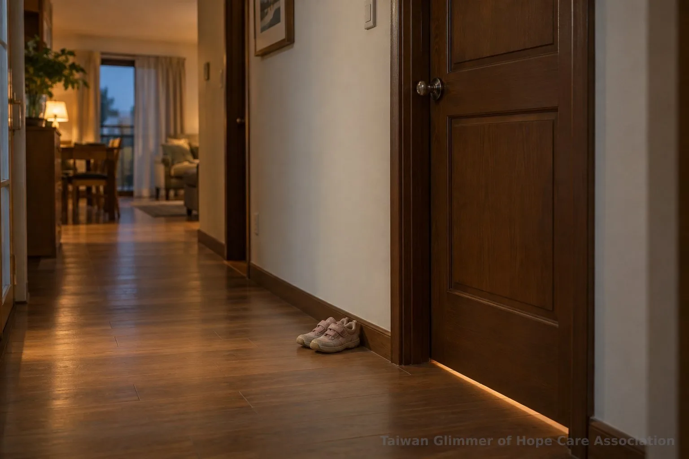
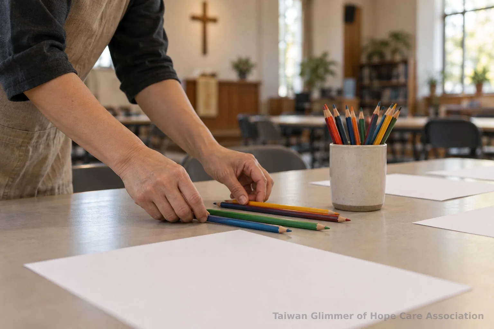
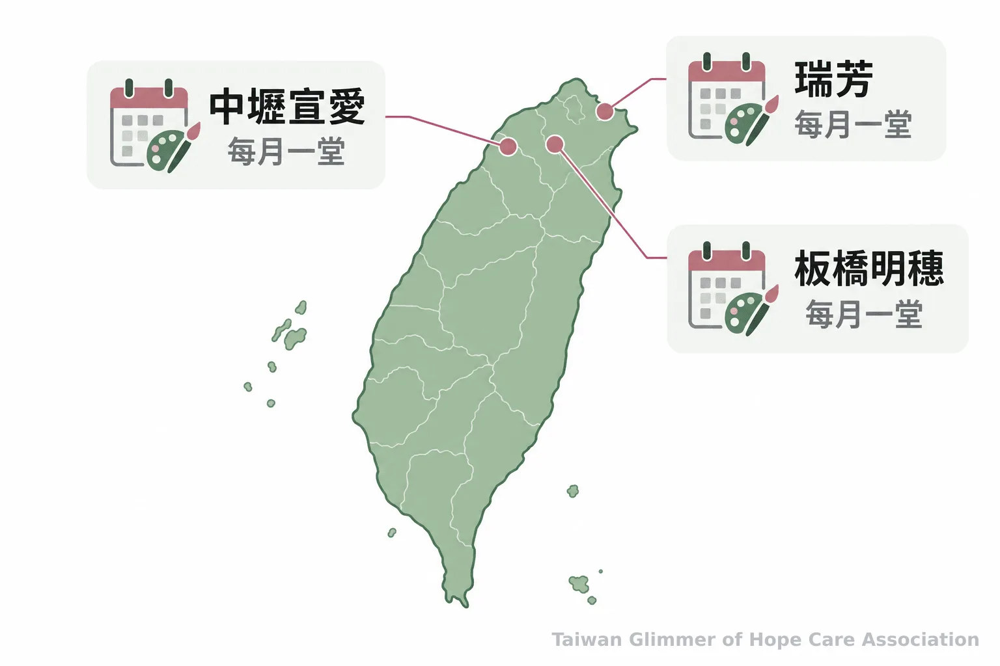

微光如何陪伴目睹家暴兒少？從在地藝術課開始
孩子看見或直接聽聞家庭暴力都可能受到影響。認識家暴防治法的定義、照顧者的安全做法，以及微光協會如何透過在地藝術陪伴支持孩子。
孩子可能在另一個房間聽見家庭暴力，也可能因家中衝突而感到不安。台灣微光希望關懷協會透過在地合作據點開設藝術陪伴課，讓孩子有創作與分享的空間；照顧者若發現安全疑慮，仍應先尋求適當協助。
一、看見或聽見，都可能是目睹家庭暴力
法律上的「目睹家庭暴力」不只指親眼看見，也包括直接聽聞。依《家庭暴力防治法》第2條，家庭暴力涵蓋家庭成員間身體或精神上的騷擾、控制、脅迫，以及經濟上的不法侵害等行為，詳見法條全文。
孩子即使沒有出現在衝突現場，也可能聽見並受到影響。不過，家人意見不合不能一概視為家庭暴力，仍須依行為和關係判斷；有疑問時可詢問主管機關或專業人員。
依同法第8條，地方家庭暴力防治中心可依評估提供或轉介目睹兒少所需服務。服務內容與安排須由相關單位評估，不是每個孩子都會取得相同服務。

二、沒有外傷，也要留意孩子的感受
衛生福利部資料指出，目睹家庭暴力可能牽動孩子的身體狀況、情緒、行為及人際互動；孩子的反應各有不同，不能用一種表現推斷經歷或狀況。
孩子可能沉默、受驚、睡眠或專注狀況改變，也可能沒有明顯變化；單一徵象不能證明目睹暴力。Holt 等人回顧研究指出，兒少可能受到顯著影響，但研究中的暴力定義、接觸時間與族群不一，群體結果不能直接預測個別孩子的發展。
照顧者可留意孩子近期生活變化，聽他願意分享的內容，並告訴他身邊有可信任的大人。若需要進一步協助，可詢問學校輔導人員、社工或相關專業人員。兒少、家庭暴力被害人及陪伴他們的照顧者都可能需要支持。
三、大人先確保安全，別讓孩子承擔大人的衝突
衝突升高時，安全處置與求助由大人負責，不要讓孩子制止衝突、傳話、安撫任何一方或保護家人。
在不增加危險的前提下，可陪孩子前往安全處並聯絡可信任成人或求助單位；若離開會使風險升高，優先採取安全可行的求助方式。家長、教師、志工及一般民眾都不應自行查案或作保護決策，應把疑慮交由113或相關專業人員處理。
事後可以簡短告訴孩子：「你可能很害怕，這不是你的錯，大人會負責處理。」讓他按自己的步調開口，不追問細節，也不要求他選邊或保密。
「孩子是需要被鼓勵、被肯定的。」— 台灣微光希望關懷協會理事長林秀霞

四、微光如何以在地藝術課陪伴孩子
台灣微光希望關懷協會以「在地小衛星」方式，進入原已陪伴脆弱家庭孩子的合作單位授課，目前在瑞芳、板橋明穗與中壢宣愛設有三個據點，各據點每月安排一堂藝術陪伴課。
課程以藝術家作品或情緒主題引導創作，不設標準答案，也不比較技巧。中壢宣愛據點曾以「心情的顏色」邀孩子選色並畫出秘密花園；瑞芳愛鄰據點則以夏卡爾作品延伸「夢想花園」主題。孩子可分享作品，也可先聽別人分享。
台灣微光希望關懷協會理事長林秀霞說：「我就結合散居在各地的小小教會團體，然後一個班、兩個班，一個班、一個班地複製下去。」協會目前以在地合作開設課程。想了解課堂內容，可看活動紀錄：照片與紀錄，請見〈桃園第一個據點開課：中壢宣愛「心情的顏色」〉、〈瑞芳愛鄰據點：跟著夏卡爾，飛進我的夢想花園〉。

五、家庭暴力疑慮可撥113，立即危險打110
衛生福利部113保護專線全年提供家庭暴力及兒少保護事件通報、求助諮詢；若有人身安全立即危險，請撥110。
即使尚不確定是否涉及家庭暴力，也可向113說明疑慮並詢問資源。通話安全時，依接線人員提問提供相關資訊即可。協會課程活動可從上述活動紀錄了解；家庭安全疑慮則交由113及相關專業人員協助。
- 目睹家庭暴力包括看見或直接聽聞，孩子的反應因人而異。
- 安全處置由大人負責；志工與一般民眾不查案、不作保護決策。
- 家庭暴力疑慮可聯絡113，立即人身危險撥110。
常見問題
Q1：孩子只聽見家庭暴力，也算目睹嗎？
算，法律定義包含直接聽聞；有疑問可向113或主管機關詢問。
Q2：家人意見不合就是家庭暴力嗎？
不一定，仍須依實際行為與關係判斷。
Q3：孩子沒有外傷，還要留意嗎？
可以觀察生活和情緒變化，但不宜只憑單一表現下結論。
Q4：照顧者可以怎麼安慰孩子？
可簡短說：「這不是你的錯，大人會負責處理。」並讓孩子按自己的步調表達。
Q5：何時聯絡113或110？
家庭暴力或兒少保護疑慮可撥113；若有立即人身安全危險，撥110。
參考資料
-
法務部全國法規資料庫。《家庭暴力防治法》（2023年修正）。https://law.moj.gov.tw/LawClass/LawAll.aspx?pcode=D0050071
-
衛生福利部保護服務司。113保護專線介紹。https://dep.mohw.gov.tw/DOPs/cp-1183-6499-105.html
-
衛生福利部保護服務司 (2016，更新於2024)。衛生福利部辦理「看不見的傷—關懷目睹家庭暴力兒童及少年記者會」呼籲大眾共同響應，還給孩子一個沒有驚懼的童年。https://www.mohw.gov.tw/fp-16-14725-1.html
-
Holt S, et al. (2008). The impact of exposure to domestic violence on children and young people: a review of the literature. Child Abuse & Neglect, 32(8), 797–810. https://pubmed.ncbi.nlm.nih.gov/18752848/
本文同步刊於 appi.news。